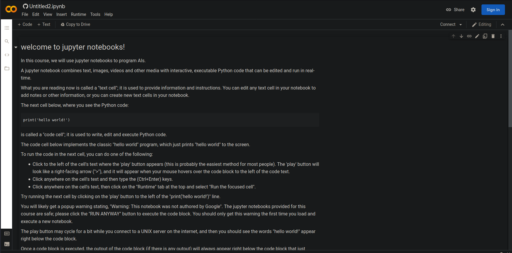
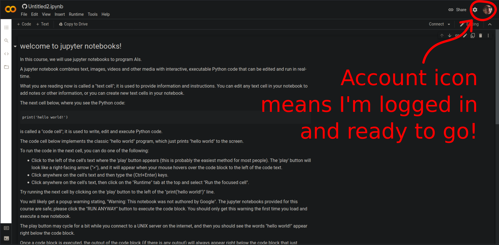
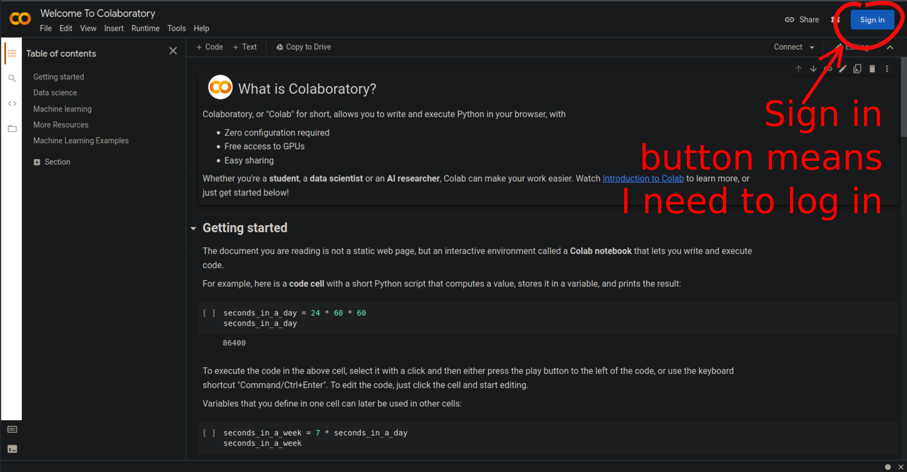
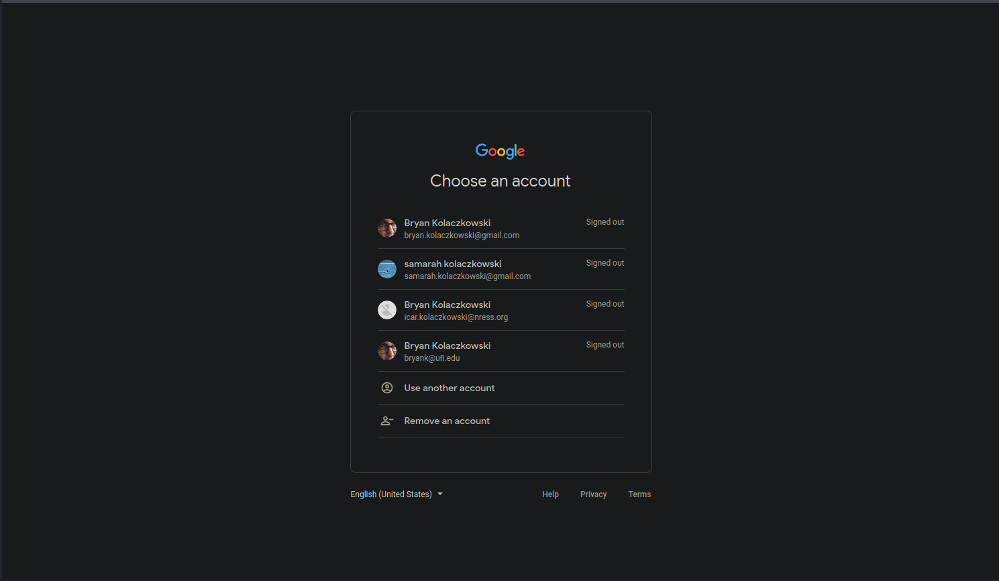
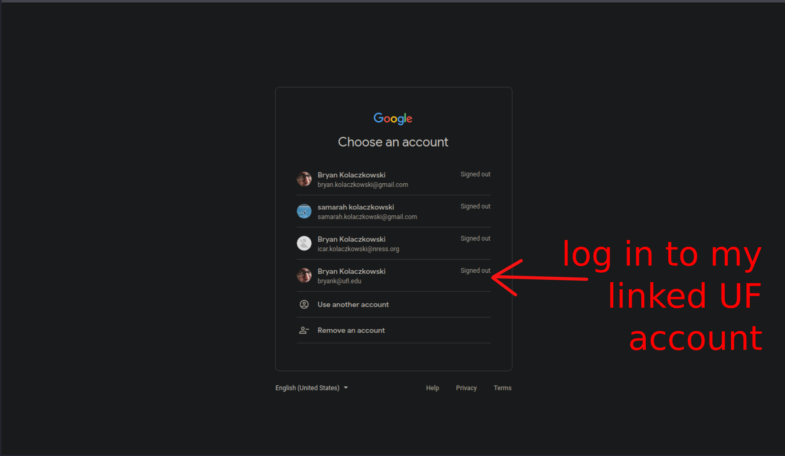
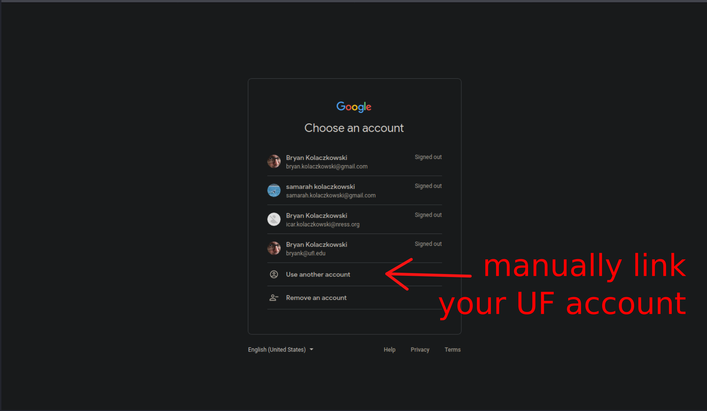
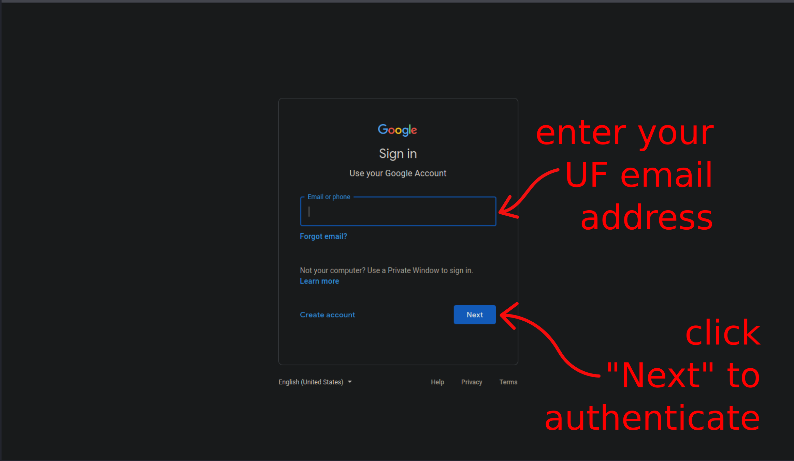

How do I access the jupyter noteboooks for this course?
You will need to log into google colab to access and run the course jupyter notebooks. Here we'll show you how.
Let's get started and run your first jupyter notebook through google colab.
In this web page, we'll describe how to log into google colab, access this course's first jupyter notebook and run the jupyter notebook in colab. I would recommend reading through this page in its entirety first, and then work through the process on your own, so you can run your first jupyter notebook in colab.
My first jupyter notebook in colab
To access this course's first jupyter notebook, just click on this link.
A new browser tab should open in your web browser, and it should look pretty similar to the figure below.
The first jupyter notebook for this course has the title "welcome to jupyter notebooks!". Your background color will likely be different; I user a "dark reader" plugin on my browser, which changes the background to dark gray, because I dislike bright backgrounds.
The first important thing you'll need to do in google colab is to make sure you are logged in using a google account. You can use any google account to complete this course. If you have a @gmail.com email address, you probably already have a personal google account, and you can use that account for this course, if you'd like. If you have a @ufl.edu email address, you probably have UF gatorlink credentials, which include a UF-associated google account; you can use your UF-associated google account to complete this course, if you'd like. If you don't have an existing google account or UF gatorlink credentials, you will probably need to create a new personal google account to complete this course.
Look in the upper right-hand corner of the google colab page. If you are already logged into a google account, you should see your account icon in the upper-right corner. If this is the case, you are ready to run the course jupyter notebooks.
If you see a button labelled "Sign in" in the upper-right corner of the google colab page, you will need to log into a valid google account in order to access colab and run the course jupyter notebooks.
To log into colab, click on the "Sign in" button; you'll be taken to the google account sign-in page. If you have a google account (or many), you should see your google accounts listed, and you can choose whichever account you'd like to use to complete this course. If you don't have an existing google account, you can create a new account by following the instructions.
If you have a University of Florida email address and gatorlink credentials, you can use your UF credentials to access your existing UF-associated google account. If your UF email address is listed as one of your google accounts, you can click on this account to sign in; you will be taken to the UF login page, where you will need to use your gatorlink id and password to log in, and you will need to go through two-factor authentication.
If you don't see your UF email address listed in your google accounts, and you would like to use your UF-associated google account for this course, click on "Use another account".
Enter your UF email address in the "Sign in" form, and click the "Next" button to authenticate. You will be taken to the UF login page, where you will need to use your gatorlink id, password and two-factor authentication to login.
Once you log in, you should see your account icon in the upper-right corner of the google colab page, which means you are ready to run the jupyter notebook.

The first jupyter notebook for this course is a very simple example, which is just here to introduce you to jupyter notebooks, google colab, and to help you troubleshoot any login problems.
This short video demonstrates how to log in to google colab and access this first jupyter notebook.
Please make sure you can log into google colab, access the first course jupyter notebook, and read through the notebook and execute the interactive python code.